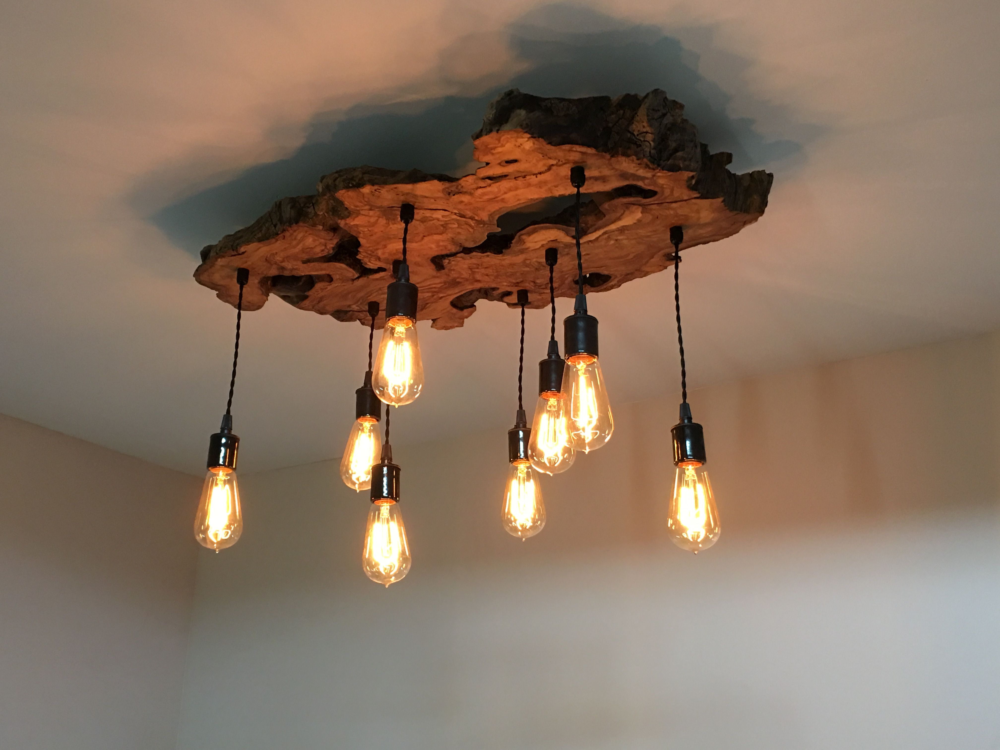

Blog
9/23/19
We just finished up with this funky chandelier. Greg had come across some interesting wood scraps that gave him a little inspiration, so we scraped together some retro-looking Edison light fixtures and got to work. With a little ingenuity and some spare time, and some odds and ends, we made something cool. I particularly love how the different positions of the lights cast the variety of shadows on the ceiling. It came out nice and this small project was a lot of fun.